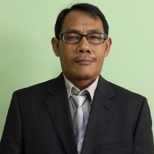
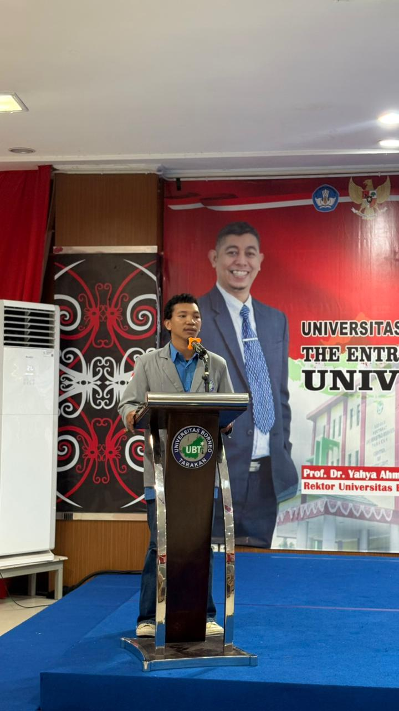

Struktur Kepengurusan

Penasehat
Memberikan arahan dan bimbingan strategis kepada BPM.
Dr. Asbar Laga, S.T., M.Si.
Pembina
Dosen pembimbing yang memberikan arahan kepada BPM.
Tuti Alawiyah, S.Si., M.Sc.

Ketua Umum
Pemimpin tertinggi BPM FPIK UBT.
Sukardi, S.Pi

Sekretaris Umum
Pengelolaan dan pelayanan administrasi.
Muhammad Wahyudi

Bendahara Umum
Pengelolaan anggaran kepengurusan.
Weda Octavia Kasing

Komisi I - Legislatif
Menampung aspirasi mahasiswa FPIK.
Jela Tomas

Komisi II - Aspiratif
Advokasi permasalahan mahasiswa.
Hafid

Komisi III - Pengawasan
Menegakkan peraturan organisasi.
Sebastian

Komisi IV - Kominfo
Mengelola informasi publik BPM.
Muhammad Deriansyah